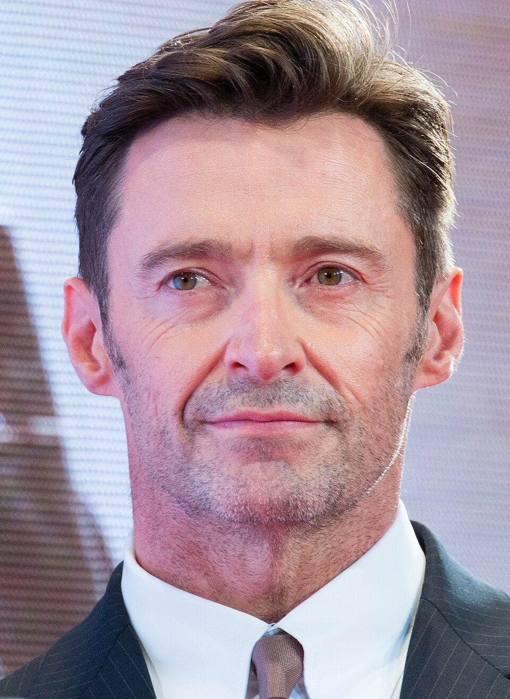
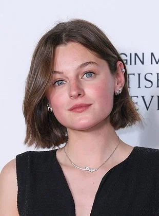
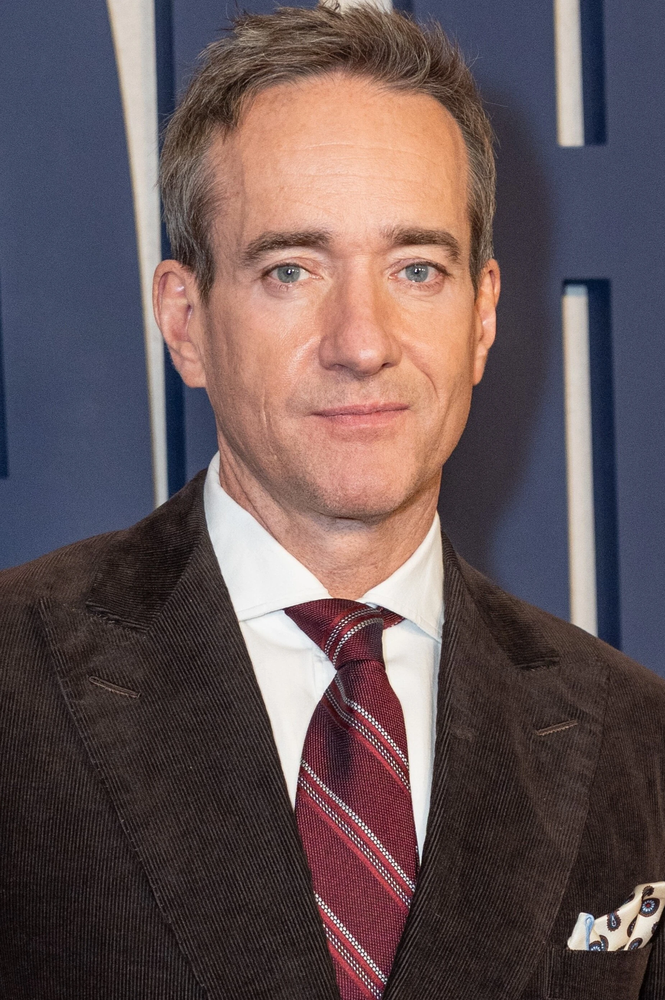
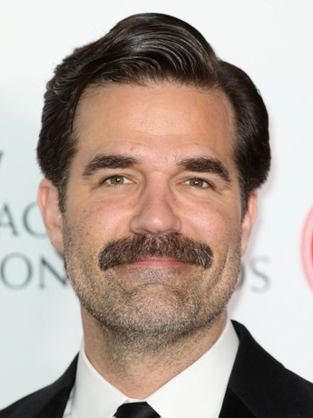
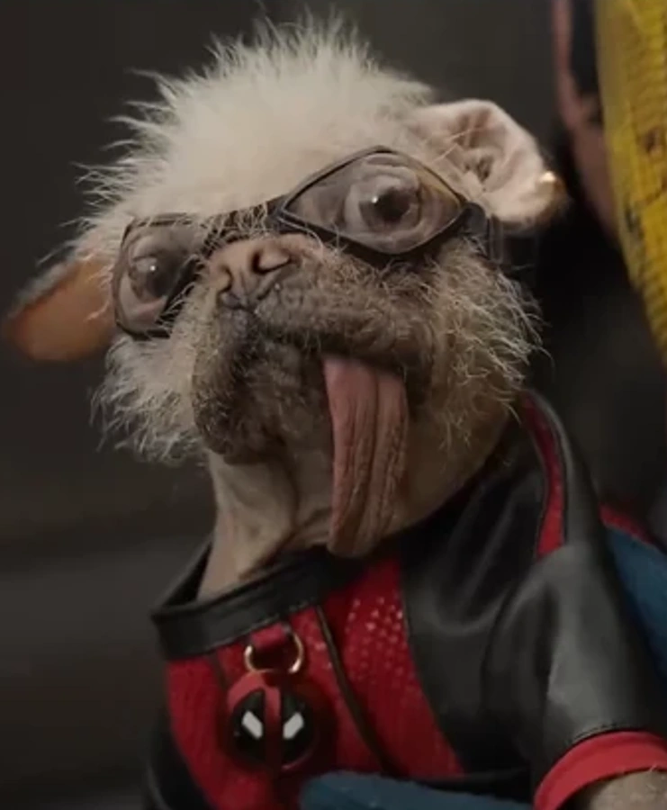

Deadpool / Wade Wilson
Ryan Reynolds
El mercenario bocazas regresa para salvar su universo con su característico humor negro y habilidades de curación rápida.
Conocé a los actores y personajes que le dan vida a esta historia:
El mercenario bocazas regresa para salvar su universo con su característico humor negro y habilidades de curación rápida.

Una versión rota y melancólica de Logan que debe unirse a Deadpool para evitar una catástrofe multiversal.

La poderosa y peligrosa hermana gemela de Charles Xavier, gobernante del Vacío con inmensos poderes telepáticos.

Un agente burocrático de la TVA con intenciones ocultas que intenta erradicar la línea temporal de Wade.

El humano común sin superpoderes pero querido por todos, miembro leal del equipo de Wade en la concesionaria.

La variante canina más carismática y fea del multiverso que se roba el corazón de Wade instantáneamente.